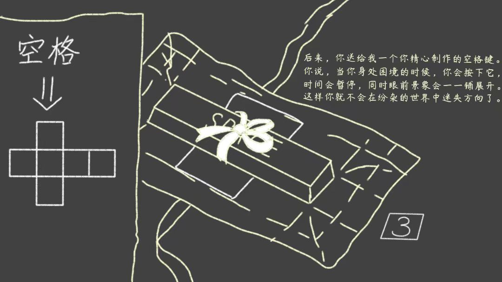

|  | 第6关后来，你送给我了一个你精心制作的空格键。 你说，当你身处困境的时候，按下这个按键， 时间会暂停，同时眼前的事物会一一铺展开。 这样，你就不会在纷杂的世界中迷失自我了。 (空格键在《花开有几何》中是暂停时间的功能。在本游戏中，按空格键可以在暂停时间的同时展开立方体，便于观察地图全貌) |
过关攻略（3次旋转）： 这一关的背景传达了一个重要信息——按空格键展开地图。 门上的三角形标示门的朝向。只有当门正立在地上时才能进入通关。 因此你需要先跳起打开蓝色开关，再从左侧通道落下，最后往右走进门。 |
|
第7关猫站真是一个充满欢声笑语的地方。 在这里，我不仅认识了你， 我还结识了许多志同道合的朋友。 同时我还发现了更多更有创意的作品。 感受到了图形化编程的魅力和无限可能。 （该关卡背景是钻石awa的《地牢传奇》。钻石awa目前封禁中，该作品暂不可游玩） |
|
过关攻略（8次旋转）： 往左边走，跳过岩浆和障碍（有些极限），到岔路走下面，打开蓝色开关， 再重新沿着之前的路线绕一圈，这次到岔路走上面，大跳进门通关 |
|
第8关也正是在这时，我爱上了编程。 但是，我最爱的事情， 莫过于和你共乘一叶扁舟， 在荷塘月色中仰望繁星。 每一颗星， 都象征着茫茫宇宙中 一个闪烁的希望。 （该关卡背景为Simplay的《花开有几何》，这是一款纯画笔游戏。 游戏链接：https://shequ.codemao.cn/work/140633472） |
|
过关攻略（8次旋转）： 逆时针绕半圈到最左面，打开蓝色开关，再绕到最右面进门 |
|
第9关然而，月满则亏，繁星终散。 我对未来的无限期盼，也必将随时间消逝。 那时我还没意识到，这是命中注定…… （背景垃圾成堆，照应猫站的广告和互赞现象频繁） |
|
过关攻略（14次旋转）： 按照下列顺序依次操作 打开蓝→打开绿→打开紫→往左返回→打开黄→往右一路绕过所有开关，打开粉→进门通关 |
|
第10关我们一起去的那个池塘，想必是你的匠心力作。 可是一个星期后，并没有人前来欣赏游玩。 不甘心的我，奋笔疾书写了满满一页纸贴到公告栏上， 为你和其他用心的创作者们发声。 （《花开有几何》刚发布一个星期后，浏览量未破百，而《几何缆车》发布三天后浏览量破千） |
|
过关攻略（12次旋转）： 按照下列顺序依次旋转立方体 右下下左→打开蓝→右下下→打开黄→下下→打开绿→左左下→进门通关 |
|